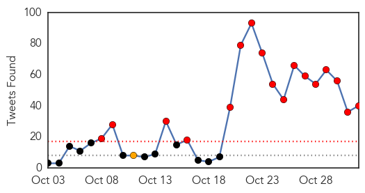
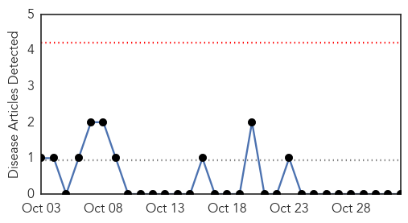
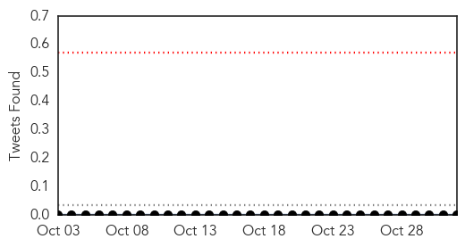

Ebola
30-Day Web Trend
3 alerts, 0 warnings

30-Day Twitter Trend
20 alerts, 0 warnings

Article Locations
Article Confidences

Top Articles:
- 1.000
- Health Aftereffects Plague Ebola Survivors
- 1.000
- As Ebola scare dies down in U.S., infectious disease preparations wane
- 0.967
- U.S Lawmakers Urge Increased U.S Response To Ebola
- 0.777
- Plan International Liberia Joins Ebola Fight, Donates Three Used Vehicles, Hundreds of Items Valued At $84,000.00
- 0.667
- Religion ‘Breakthrough’
- 0.526
- What's Killing the Children in Sierra Leone? Hint: It's Not Ebola
Top Tweets:
- 0.999
- [Health] Ebola - https://t.co/fFKjBY9XBV ebola
- 0.997
- Can we slow down the Ebola virus? - https://t.co/iNPGReaHk9 ebola
- 0.995
- ebola - https://t.co/yYTileP8OV ebola
- 0.995
- Spec's Midrange Ebola (?) Smorc - https://t.co/a17sgL3FOe ebola
- 0.995
- Ebola Zombies Fullmovie - https://t.co/t9PrEBRBlh ebola
- 0.995
- Ebola Zombies FULLMOVIE - https://t.co/1mjhmMBpcf ebola
- 0.993
- TheRaxxify| ebola much - https://t.co/BifEaxmRPg ebola
- 0.989
- Ebola Vaccine Update - https://t.co/OWyIVJoFZU ebola
- 0.988
- Ebola-chanya's Profile - https://t.co/M0H1sAC1gq ebola
- 0.988
- Ebola-chanya's Profile - https://t.co/BAQmyelUUP ebola
- 0.988
- Digital Illustration Of Ebola Virus In Colour Background - https://t.co/GreM7lV2PV ebola
- 0.987
- Study blocks ebola virus budding by regulating calcium signaling news - https://t.co/ZUdsbFgbnX ebola
- 0.987
- Ebola wreaks havoc in Liberia - https://t.co/Kbxu4E4toW ebola
- 0.984
- EAC partners warned of Ebola outbreak during rainy season - https://t.co/Qqoh0YxOmJ ebola
- 0.982
- How To Prevent Manage and Treat The Ebola Virus (Re - https://t.co/49n0p8d3eb ebola
- 0.981
- serveme.tf - CR4FTY vs EBOLA - https://t.co/AG9VgC8cvN ebola
- 0.980
- why usa/Europe government dont use ebola virus,to control imigrants and terrorists? - https://t.co/2yWGxIzlpm ebola
- 0.980
- fake-ebola - https://t.co/Y9i1uQodbw ebola
- 0.979
- Ebola Free Nurse - https://t.co/DNwH5aYPmk ebola
- 0.978
- Medical Research Offers Big Bucks if You Inject Yourself With Ebola Virus - https://t.co/tw5mf8wS0f ebola
- 0.974
- Ebola scare | Texas governor: children had contact with US Ebola patient - https://t.co/Qky3jxfU5w ebola
- 0.971
- Ebola survivors continue to face poor health - https://t.co/NyhJcG2D6s ebola
- 0.957
- WMNOVergnault published MoD to use spiders to test lifespan of weaponised Ebola - https://t.co/qfQrWcjgax ebola
- 0.957
- Ebola hysteria in the US retrospect: The media, US outbreaks and a global pandemic - Outbreak News Today https://t.co/51n1G6Q0G0 ebola EVD
- 0.956
- What's Killing the Children in Sierra Leone? Hint: It's Not Ebola - https://t.co/LaDvOUyVbF ebola
- 0.953
- Donation of Supplies for Ebola Prevention in West African Schools - https://t.co/yaK9P9QsuQ ebola
- 0.947
- Guinea: Newborn tests positive for Ebola despite healthy parents - https://t.co/ZJSOkMRQlQ ebola
- 0.946
- Ebola vaccine and corporate responsibility. - https://t.co/v6ym18xuHr ebola
- 0.946
- EBOLA and the PLAGUE sprayed on spider webs by UK MoD - https://t.co/YUIiO3Z02b ebola
- 0.941
- US Hospitals offering FREE Ebola Virus Vaccines injected with Live Ebola details https://t.co/KBA1EBY3CC https://t.co/dxMpLmEIOo
- 0.939
- remake joshua dun, Tyler Joseph got Ebola? - https://t.co/D4ytEu7ZFY ebola
- 0.939
- Ugandan scientist develops Ebola test kit - https://t.co/qZNMxTSDU0 ebola
- 0.927
- Deforestation 'may have started west Africa's Ebola outbreak':... https://t.co/blDCrGTFZJ
- 0.906
- Second Ebola test on Lisbon transit passenger comes back negative - https://t.co/cnteN4zLJc ebola
- 0.906
- Ebola hysteria in the US retrospect: The media, US outbreaks and a global pandemic - https://t.co/qYOzxp7CNU ebola
- 0.902
- Guidance for Arcadia Staff Intending to Travel to, or Returning from, Ebola Affected Countries - https://t.co/PIo79BdAJx ebola
- 0.895
- Ebola V1 Black Ops 2 Gsc Mod Menu Pc Only - https://t.co/uhbLFERhdd ebola
- 0.877
- Second Ebola test on Lisbon transit passenger comes back negative - The Portugal News https://t.co/MdcfWXVqeX ebola EVD
- 0.850
- Military Scientists Spray Spider Webs With Ebola And The PLAGUE - https://t.co/rXElNLILfx ebola
- 0.836
- Lusa - Business News - Portugal Second Ebola test on Lisbon transit passenger comes back ... - https://t.co/RknNqh8t0Z ebola
- 0.775
- UK Ebola nurse Pauline Cafferkey 'in critical condition' - BBC News - https://t.co/w7YOPakcim ebola
- 0.733
- Using - https://t.co/lIOg14qVwZ ebola
- 0.704
- Samuel Eto'o to promote health in Africa with FIFA - https://t.co/OIy6n7QxML ebola
- 0.683
- Be Paid $$$$ volunteer get injected with LIVE EBOLA VIRUS details https://t.co/Yn2lIma99d
- 0.683
- Be Paid $$$$ volunteer get injected with LIVE EBOLA VIRUS details https://t.co/Yn2lIma99d
- 0.680
- Ebola hysteria in the US retrospect: The media, US outbreaks and a global pandemic - Outbreak News Today https://t.co/lq4hL082zt
- 0.659
- 4 comments - https://t.co/4C8z5uRUox ebola
- 0.645
- A New Ebola Documentary Shows Off the Potential of 360-Degree Filmmaking - https://t.co/K2BZqdObeI ebola
- 0.571
- Guinea records new cases of Ebola: https://t.co/MsHKJwAEPR https://t.co/sKNsrhZUrn
- 0.520
- New Ebola Case Today https://t.co/d8pg9qn1GH
Showing top 50 tweets...
Mumps
30-Day Web Trend
0 alerts, 0 warnings

30-Day Twitter Trend
0 alerts, 0 warnings

Article Locations

Article Confidences

Top Articles:
-
No articles found for Nov 01, 2015
Top Tweets:
-
No tweets found for Nov 01, 2015